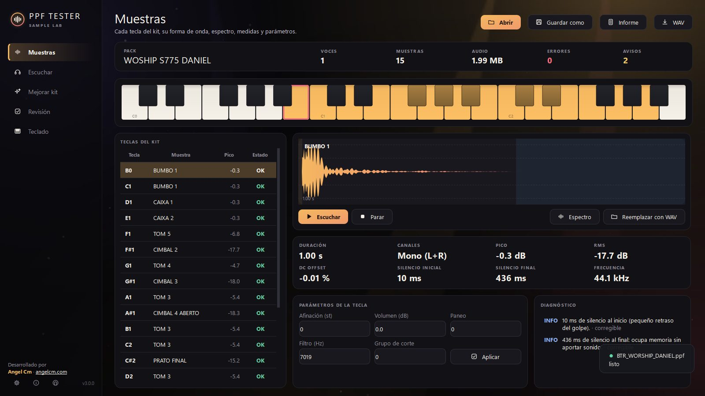
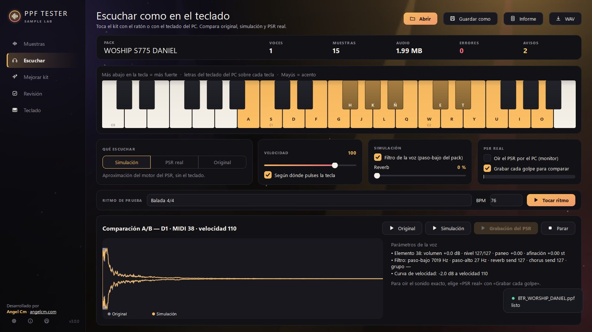
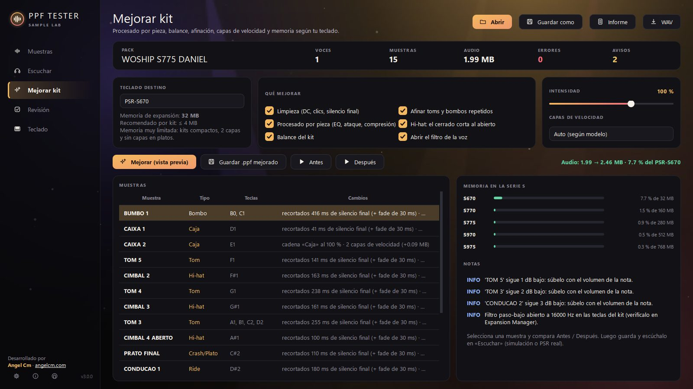

Arrastra tus WAV y PPF Tester arma el kit .ppf para Yamaha Expansion Manager. Escúchalo como sonará en tu PSR, mejóralo pieza por pieza y ajústalo a la memoria de tu modelo.

Pensado para músicos de alabanza que tocan con su PSR cada semana.
Detecta bombo, caja, toms, hi-hat y platos por carpetas, nombres o sonido. Junta versiones y capas de velocidad, y arma el kit en las teclas estándar.
Simulación del motor del teclado, calibrable con tu PSR real, o toca el PSR por MIDI y compara A/B.
EQ, ataque y compresión por pieza, balance del kit, afinación de toms, capas de velocidad y ajuste fino.
Golpes que no suenan idénticos, ritmos worship 6/8, balada 12/8 y gospel con metrónomo y swing.
Arrastra sonidos entre teclas, edita rangos de velocidad, recorta y aplica fades sobre la forma de onda.
Calcula cuánto ocupa tu kit en cada modelo y lo ajusta solo para que entre, incluso en el S670. Suma tu set completo de packs.
Mezcla cercanos, overheads y sala a tu gusto, añade una sala integrada y corrige la fase de las muestras estéreo.
Guarda tus mejores muestras con etiquetas y favoritos, y arma kits nuevos desde cero.
Pianos, cuerdas y pads desde tus WAV: detecta la nota de cada muestra y crea loops sin clics.
Pads grandes para el ensayo y demos en MP3 de tu kit para compartir por WhatsApp.
Te guía para conectar el teclado, probar cada tecla, calibrar la simulación y revisar la compatibilidad.


El tamaño recomendado deja espacio para tus otros packs.
| MODELO | MEMORIA DE EXPANSIÓN | RECOMENDADO POR KIT | CAPAS DE VELOCIDAD |
|---|---|---|---|
| PSR-S670 | ≈ 32 MB | ≤ 4 MB | 2 |
| PSR-S770 | 160 MB | ≤ 20 MB | 3 |
| PSR-S775 | 280 MB | ≤ 30 MB | 3 |
| PSR-S970 | 512 MB | ≤ 50 MB | 3 |
| PSR-S975 | 768 MB | ≤ 60 MB | 3 |
Windows puede mostrar un aviso de SmartScreen la primera vez: «Más información» → «Ejecutar de todas formas». En Mac, la primera vez abre la app con clic derecho → «Abrir».